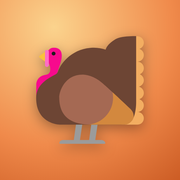

Danksgiving
The prep plan, day-of timeline, recipes, and shopping list.
It runs from your home screen. Three steps:
This link opened inside another app, which cannot add it to your home screen.
Tap ··· or the compass and choose Open in Safari (or Open in browser), then follow the steps there.
- Tap ShareIn Safari, tap ··· first, then Share. In Chrome it is at the top.
- Tap Add to Home ScreenNot there? Scroll down or tap More.
- Tap Add, then open Danksgiving from the turkey on your home screen.
- Tap the menu: ⋮ at the top rightSee Open in Chrome there? Tap that first, then the menu again.
- Tap Add to Home screen or Install app
- Tap Add or Install, then open Danksgiving from the turkey on your home screen.